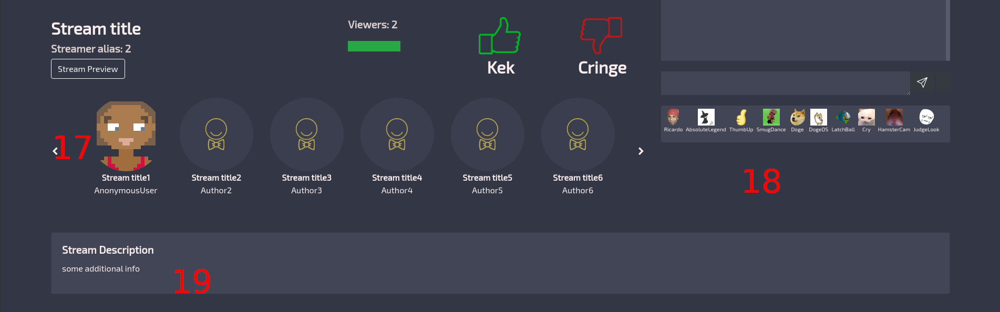

Пользовательский гайд¶
Концепция¶
Основная идея пректа очень проста
Есть стримеры и зрители
Стримеры в течении 40 секунд должны заинтересовать зрителей
Если Kek > 50%, данному стримеру дается еще 40 секунд,
если cringe > 50%, то текущий стример сменяется следующим в очереди
Какой браузер лучше использовать?¶
Для избежания разнообразных проблем , мы рекомендуем использовать google chrome
Основные элементы управления¶
Главаня страница
Рейтинг стримеров по общему поличество просмотров
О проекте
Окно стрима
Название стрима
Имя стримера
Общее количество просмотров
Процентное соотношение лайков и дизлайков
Положительно оценить стрим (Kek)
Отрицательно оценить стрим (Cringe)
Поле ввода для чата
Кнопка отпрвить
Сообщения в чате
Кнопка регистрации
Кнопка входа
Послать жалобу на этот стрим
Очередь стримеров
Эмоджи которые можно отправить в чат!
дополнительная информация о стриме
$
Примеры использования эмоджи¶
Что бы отправить эмоджи, нужно в поле ввода написать (или скопировать из примеров) их названия
Названия обязательно должны быть разделены одним пробелом с каждой стороны!
Названия чувствительны к регистру!
Примеры неправильного использования:
Absolutelegend
absoluteLegend
я ЛюблюRicardoRicardo!
Примеры правильного использования:
AbsoluteLegend
я Люблю Ricardo Ricardo !